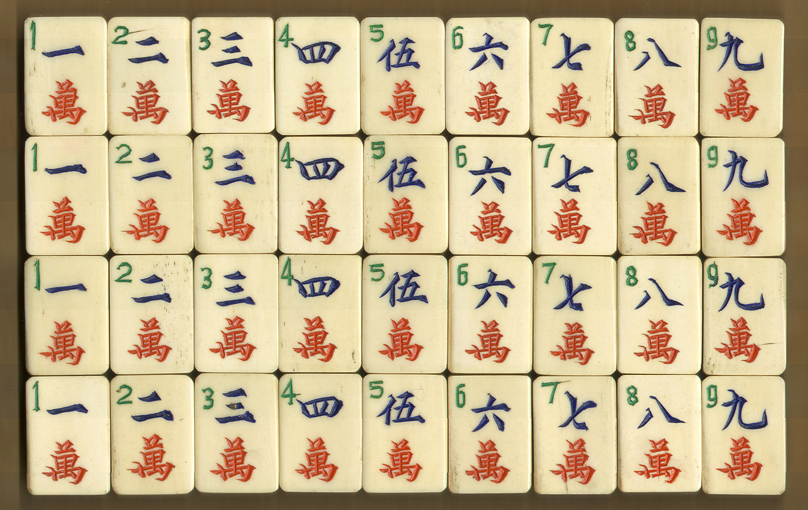
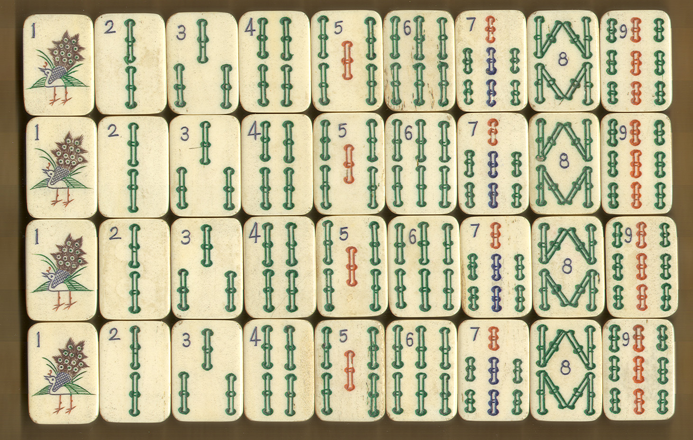
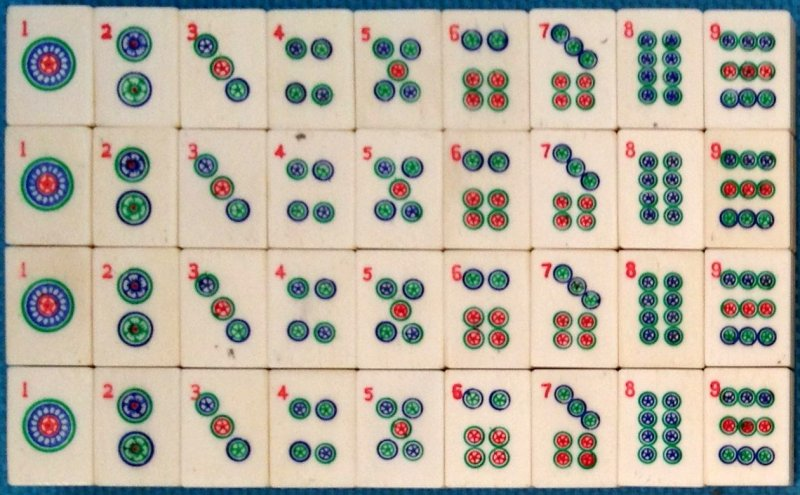
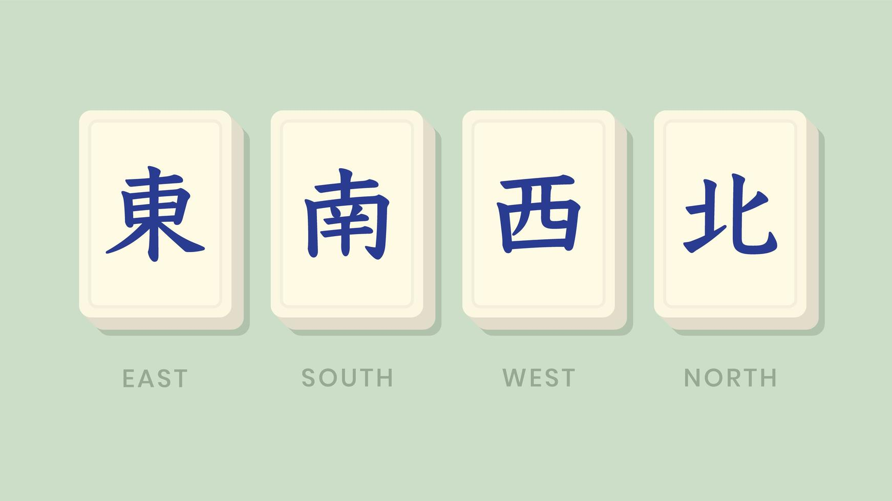
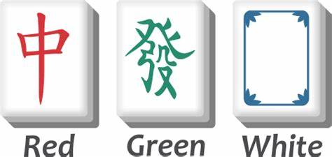
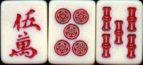
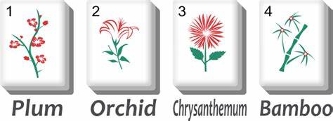
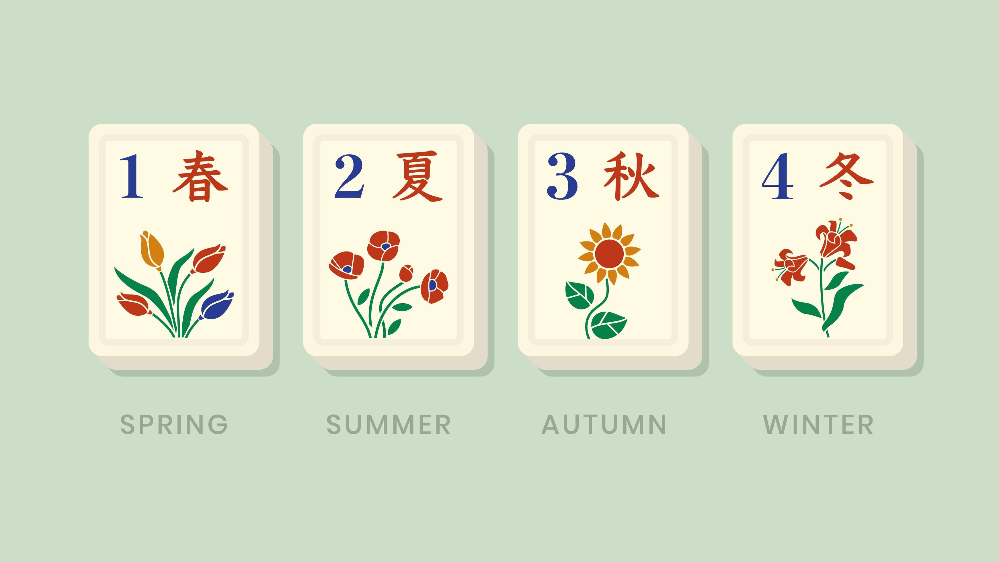

Common Mahjong Tiles
Here are some of the most common Mahjong tiles you’ll encounter during a game:
Character Tiles
Character tiles are marked with numbers in the range of 1 to 9 and are typically represented with Chinese characters.
Bamboo Tiles
Bamboo tiles are marked with a number from 1 to 9 and are often depicted with images of bamboo stalks.
Dot Tiles
Dot tiles are marked with a number from 1 to 9 and are depicted with circles or dots. They are often referred to as "Circles" in some variations.
Wind Tiles
Wind tiles represent the four cardinal directions: East, South, West, and North. These tiles are often used for bonus points or forming specific hands.
Dragon Tiles
Dragon tiles are marked with the characters Red, Green, and White. They are important for completing hands with higher points.
Special Tiles in Mahjong Variants
Different Mahjong variants have special tiles that add unique strategic elements to the game. Here are a few:
Red 5 (Riichi Mahjong)
The Red 5 tile is a special tile in Riichi Mahjong, which is used to increase the value of a hand when included in a sequence.
Flower Tiles (Chinese Mahjong)
Flower tiles are special bonus tiles in Chinese Mahjong. When drawn, they add points to the player’s score and can be replaced with a new tile from the wall.
Season Tiles (Chinese Mahjong)
Similar to Flower tiles, Season tiles represent the four seasons and are bonus tiles in Chinese Mahjong.
